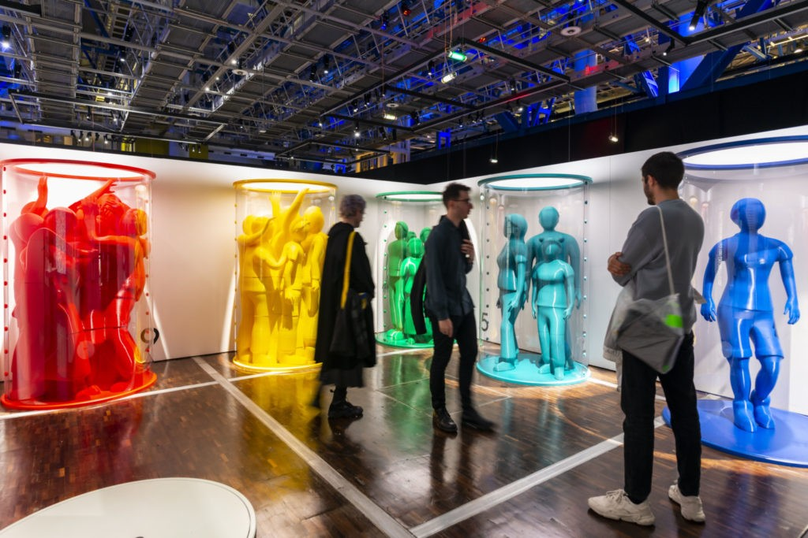
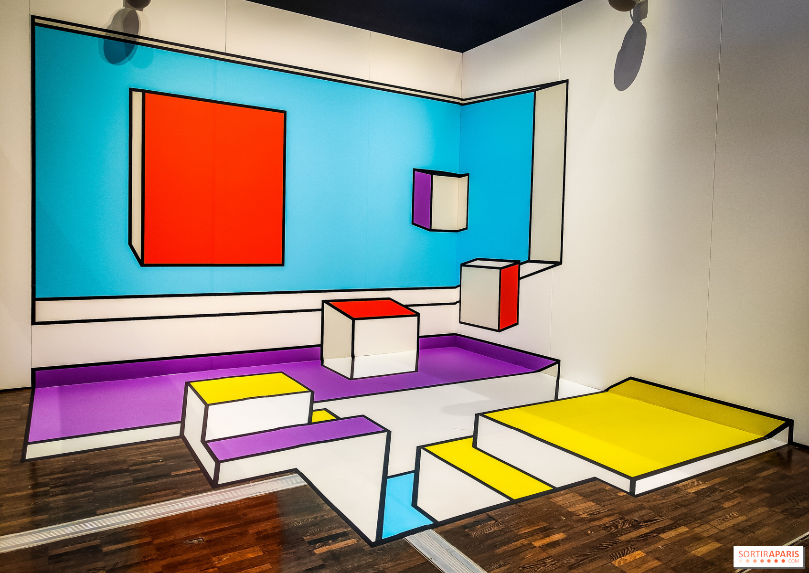

French
FrenchCROWDS 2024
Discover the fascinating world of crowds at the Cité des Sciences.
In 2024, enjoy several novelties!
- 


- 


GALLERY
Discover the fascinating world of crowds at the Cité des Sciences.
In 2024, enjoy several novelties!
GALLERY
Regular: €11 | Reduced: €9 For ages 10 and above Exhibition in French, English, and Spanish
October 18, 2024 From 10 am to 6 pm More dates to be announced.
30 Avenue Corentin Cariou, 75019 Paris Metro: Line 7, Tramway: T3b